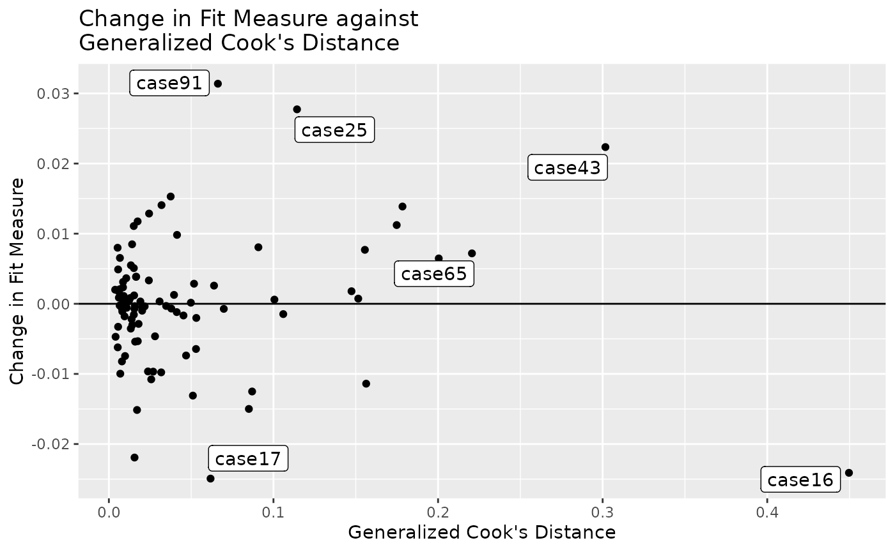
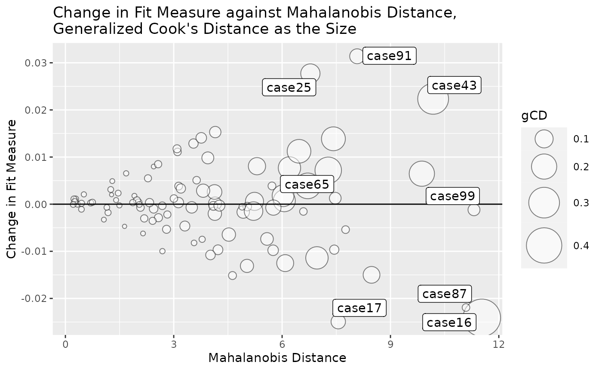

Instead of using row numbers (case.idx in the
lavaan object), lavaan_rerun() from the
package semfindr
supports user supplied case IDs. This can make the output more
readable.
library(semfindr)
dat <- pa_dat
# Add case id
dat <- cbind(id = paste0("case", seq_len(nrow(dat))), dat)
head(dat)
#> id m1 dv iv1 iv2
#> 1 case1 0.32067106 1.4587148 0.2055776 -0.42187811
#> 2 case2 0.15360231 -0.3809220 0.1853543 0.15229953
#> 3 case3 0.35136439 -0.4886773 0.9151424 1.16670950
#> 4 case4 -0.56529330 -0.9766142 0.2884440 0.04563409
#> 5 case5 -1.60657017 -1.0948066 -0.5756171 -0.18184854
#> 6 case6 0.03143301 0.5859886 0.1420111 0.06286986Suppose that the data set has a column of case IDs. A model is fitted
to this data set using lavaan::sem():
mod <-
"
m1 ~ iv1 + iv2
dv ~ m1
"
library(lavaan)
#> This is lavaan 0.6-15
#> lavaan is FREE software! Please report any bugs.
fit <- sem(mod, dat)Rerun n Times
We refit the model 100 times, each time with one case removed.
Although the id column is not stored in
lavaan, it can be supplied through the argument
case_id:
fit_rerun <- lavaan_rerun(fit, case_id = dat$id)The list of reruns now uses id as the names:
head(fit_rerun$rerun[1:3])
#> $case1
#> lavaan 0.6.15 ended normally after 2 iterations
#>
#> Estimator ML
#> Optimization method NLMINB
#> Number of model parameters 5
#>
#> Number of observations 99
#>
#> Model Test User Model:
#>
#> Test statistic 6.557
#> Degrees of freedom 2
#> P-value (Chi-square) 0.038
#>
#> $case10
#> lavaan 0.6.15 ended normally after 1 iteration
#>
#> Estimator ML
#> Optimization method NLMINB
#> Number of model parameters 5
#>
#> Number of observations 99
#>
#> Model Test User Model:
#>
#> Test statistic 6.015
#> Degrees of freedom 2
#> P-value (Chi-square) 0.049
#>
#> $case100
#> lavaan 0.6.15 ended normally after 1 iteration
#>
#> Estimator ML
#> Optimization method NLMINB
#> Number of model parameters 5
#>
#> Number of observations 99
#>
#> Model Test User Model:
#>
#> Test statistic 6.620
#> Degrees of freedom 2
#> P-value (Chi-square) 0.037As shown below, most diagnostic functions will use user supplied case IDs in their displays, making it easier to locate them in the original data set.
Diagnostic Functions
Standardized Changes in Estimates
fit_est_change <- est_change(fit_rerun)
fit_est_change
#>
#> -- Standardized Case Influence on Parameter Estimates --
#>
#> m1~iv1 m1~iv2 dv~m1 m1~~m1 dv~~dv gcd
#> case16 0.052 -0.038 -0.237 -0.004 0.624 0.450
#> case43 -0.403 -0.263 -0.135 0.223 0.120 0.302
#> case65 0.152 0.191 0.363 0.076 0.161 0.221
#> case85 -0.174 0.216 -0.119 0.335 -0.052 0.208
#> case51 0.421 -0.057 0.094 0.089 -0.044 0.200
#> case34 -0.314 -0.192 -0.109 0.189 0.030 0.178
#> case32 -0.247 0.195 -0.191 0.193 0.001 0.175
#> case18 -0.273 0.035 0.101 0.260 -0.046 0.156
#> case20 -0.239 0.204 -0.141 0.183 -0.032 0.156
#> case100 -0.001 -0.225 -0.069 0.305 -0.056 0.152
#>
#> Note:
#> - Changes are standardized raw changes if a case is included.
#> - Only the first 10 case(s) is/are displayed. Set 'first' to NULL to display all cases.
#> - Cases sorted by generalized Cook's distance.
fit_est_change_paths_only <- est_change(fit_rerun,
parameters = c("m1 ~ iv1",
"m1 ~ iv2",
"dv ~ m1"))
fit_est_change_paths_only
#>
#> -- Standardized Case Influence on Parameter Estimates --
#>
#> m1~iv1 m1~iv2 dv~m1 gcd
#> case43 -0.403 -0.263 -0.135 0.238
#> case51 0.421 -0.057 0.094 0.190
#> case65 0.152 0.191 0.363 0.189
#> case34 -0.314 -0.192 -0.109 0.142
#> case32 -0.247 0.195 -0.191 0.138
#> case20 -0.239 0.204 -0.141 0.121
#> case85 -0.174 0.216 -0.119 0.093
#> case11 0.010 0.149 -0.257 0.088
#> case18 -0.273 0.035 0.101 0.087
#> case13 0.274 0.059 -0.068 0.082
#>
#> Note:
#> - Changes are standardized raw changes if a case is included.
#> - Only the first 10 case(s) is/are displayed. Set 'first' to NULL to display all cases.
#> - Cases sorted by generalized Cook's distance.Raw Changes in Estimates
fit_est_change_raw <- est_change_raw(fit_rerun)
fit_est_change_raw
#>
#> -- Case Influence on Parameter Estimates --
#>
#> id m1~iv1 id m1~iv2 id dv~m1 id m1~~m1 id dv~~dv
#> 1 case51 0.046 case43 -0.026 case65 0.039 case61 0.043 case16 0.108
#> 2 case43 -0.043 case94 0.024 case11 -0.027 case85 0.041 case9 0.051
#> 3 case34 -0.033 case100 -0.022 case16 -0.024 case100 0.038 case76 0.050
#> 4 case13 0.030 case85 0.021 case32 -0.021 case18 0.032 case25 0.050
#> 5 case18 -0.029 case20 0.020 case99 0.020 case42 0.029 case91 0.043
#> 6 case32 -0.026 case32 0.019 case79 0.019 case43 0.028 case17 0.039
#> 7 case20 -0.025 case65 0.019 case93 0.018 case32 0.024 case65 0.030
#> 8 case75 0.021 case34 -0.019 case22 0.017 case34 0.024 case26 0.029
#> 9 case42 -0.020 case64 -0.017 case61 -0.017 case20 0.023 case62 0.027
#> 10 case68 0.020 case52 0.016 case25 -0.015 case40 0.023 case90 0.024
#>
#> Note:
#> - Changes are raw changes if a case is included.
#> - Only the first 10 case(s) is/are displayed. Set 'first' to NULL to display all cases.
#> - Cases sorted by the absolute changes for each variable.Mahalanobis Distance
fit_md <- mahalanobis_rerun(fit_rerun)
fit_md
#>
#> -- Mahalanobis Distance --
#>
#> md
#> case16 11.530
#> case99 11.312
#> case87 11.091
#> case43 10.181
#> case51 9.869
#> case13 8.476
#> case91 8.078
#> case71 7.757
#> case17 7.555
#> case68 7.472
#>
#> Note:
#> - Only the first 10 case(s) is/are displayed. Set 'first' to NULL to display all cases.
#> - Cases sorted by Mahalanobis distance in decreasing order.Changes in Fit Measures
fit_mc <- fit_measures_change(fit_rerun,
fit_measures = c("chisq", "cfi", "tli", "rmsea"))
fit_mc
#>
#> -- Case Influence on Fit Measures --
#>
#> chisq cfi tli rmsea
#> case1 0.154 -0.002 -0.005 0.002
#> case10 0.697 -0.013 -0.033 0.011
#> case100 0.092 -0.006 -0.015 0.001
#> case11 0.083 -0.002 -0.005 0.001
#> case12 0.173 -0.003 -0.007 0.002
#> case13 -0.909 0.020 0.050 -0.015
#> case14 -0.239 0.004 0.011 -0.005
#> case15 0.047 0.000 0.000 0.000
#> case16 -1.533 0.019 0.048 -0.024
#> case17 -1.591 0.027 0.066 -0.025
#>
#> Note:
#> - Only the first 10 case(s) is/are displayed. Set 'first' to NULL to display all cases.All-In-One-Function
fit_influence <- influence_stat(fit_rerun)
fit_influence
#>
#> -- Standardized Case Influence on Parameter Estimates --
#>
#> m1~iv1 m1~iv2 dv~m1 m1~~m1 dv~~dv gcd
#> case16 0.052 -0.038 -0.237 -0.004 0.624 0.450
#> case43 -0.403 -0.263 -0.135 0.223 0.120 0.302
#> case65 0.152 0.191 0.363 0.076 0.161 0.221
#> case85 -0.174 0.216 -0.119 0.335 -0.052 0.208
#> case51 0.421 -0.057 0.094 0.089 -0.044 0.200
#> case34 -0.314 -0.192 -0.109 0.189 0.030 0.178
#> case32 -0.247 0.195 -0.191 0.193 0.001 0.175
#> case18 -0.273 0.035 0.101 0.260 -0.046 0.156
#> case20 -0.239 0.204 -0.141 0.183 -0.032 0.156
#> case100 -0.001 -0.225 -0.069 0.305 -0.056 0.152
#>
#> Note:
#> - Changes are standardized raw changes if a case is included.
#> - Only the first 10 case(s) is/are displayed. Set 'first' to NULL to display all cases.
#> - Cases sorted by generalized Cook's distance.
#>
#> -- Case Influence on Fit Measures --
#>
#> chisq cfi rmsea tli
#> case1 0.154 -0.002 0.002 -0.005
#> case10 0.697 -0.013 0.011 -0.033
#> case100 0.092 -0.006 0.001 -0.015
#> case11 0.083 -0.002 0.001 -0.005
#> case12 0.173 -0.003 0.002 -0.007
#> case13 -0.909 0.020 -0.015 0.050
#> case14 -0.239 0.004 -0.005 0.011
#> case15 0.047 0.000 0.000 0.000
#> case16 -1.533 0.019 -0.024 0.048
#> case17 -1.591 0.027 -0.025 0.066
#>
#> Note:
#> - Only the first 10 case(s) is/are displayed. Set 'first' to NULL to display all cases.
#>
#> -- Mahalanobis Distance --
#>
#> md
#> case16 11.530
#> case99 11.312
#> case87 11.091
#> case43 10.181
#> case51 9.869
#> case13 8.476
#> case91 8.078
#> case71 7.757
#> case17 7.555
#> case68 7.472
#>
#> Note:
#> - Only the first 10 case(s) is/are displayed. Set 'first' to NULL to display all cases.
#> - Cases sorted by Mahalanobis distance in decreasing order.Diagnostic Plots
Fit Measure vs. Generalized Cook’s Distance
gcd_gof_plot(fit_influence,
fit_measure = "rmsea",
largest_gcd = 3,
largest_fit_measure = 3)
Bubble Plot
gcd_gof_md_plot(fit_influence,
fit_measure = "rmsea",
largest_gcd = 3,
largest_fit_measure = 3,
largest_md = 3,
circle_size = 15)